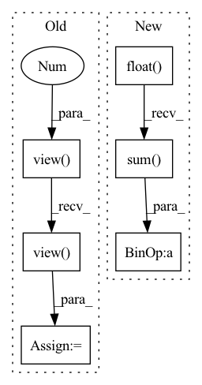

Pattern ID :1534
Before Change
// logits_flat: (batch * max_len, dim)
input = input.view(-1, input.shape[-1])
// target_flat: (batch * max_len, dim)
target_flat = target.view(-1 , target.shape[-1])
// losses_flat: (batch * max_len, dim)
losses_flat = functional.l1_loss(
input, target_flat, size_average=False, reduce=False)
// losses: (batch, max_len, dim)
losses = losses_flat.view( *target.size())
// mask: (batch, max_len, 1)
mask = sequence_mask(
sequence_length=length, max_len=target.size(1)).unsqueeze(2)After Change
loss: An average loss value masked by the length.
// mask: (batch, max_len, 1)
mask = sequence_mask(
sequence_length=length, max_len=target.size(1)).unsqueeze(2).float()
mask = mask.expand_as(input)
loss = functional.l1_loss(
input * mask, target * mask, reduction="sum")
loss = loss / mask.sum()
return loss
class MSELossMasked(nn.Module):In pattern: SUPERPATTERN
Frequency: 3
Non-data size: 6
Instances Fragment ID: 4426978
Project Name: coqui-ai/tts
Commit Name: a15b3ec9a18377bf67356a9b5c29f4b767001d05
Time: 2018-08-13
Author: erengolge@gmail.com
File Name: layers/losses.py
M Class Name: L1LossMasked
N Class Name: L1LossMasked
M Method Name: forward(4)
N Method Name: forward(4)
M Parent Class: nn.Module
N Parent Class: nn.Module
M File Name: layers/losses.py
N File Name: layers/losses.py
M Start Line: 25
M End Line: 42
N Start Line: 26
N End Line: 31
Before Change
target = target.contiguous()
// logits_flat: (batch * max_len, dim)
input = input.view(-1 , input.shape[-1])
// target_flat: (batch * max_len, dim)
target_flat = target.view(-1, target.shape[-1])
// losses_flat: (batch * max_len, dim)
losses_flat = functional.mse_loss(
input, target_flat, size_average=False, reduce=False)
// losses: (batch, max_len, dim)
losses = losses_flat.view( *target.size())
// mask: (batch, max_len, 1)
mask = sequence_mask(
sequence_length=length, max_len=target.size(1)).unsqueeze(2)
losses = losses * mask.float()
loss = losses.sum() / (length.float().sum() * float(target.shape[2]))
return loss
After Change
loss: An average loss value masked by the length.
// mask: (batch, max_len, 1)
mask = sequence_mask(
sequence_length=length, max_len=target.size(1)).unsqueeze(2).float()
mask = mask.expand_as(input)
loss = functional.mse_loss(
input * mask, target * mask, reduction="sum")
loss = loss / mask.sum()
return loss
Fragment ID: 4426977
Project Name: coqui-ai/tts
Commit Name: 4326582bb1e68480ef79a02abbf4bfacc3aadede
Time: 2019-03-06
Author: egolge@mozilla.com
File Name: layers/losses.py
M Class Name: MSELossMasked
N Class Name: MSELossMasked
M Method Name: forward(4)
N Method Name: forward(4)
M Parent Class: nn.Module
N Parent Class: nn.Module
M File Name: layers/losses.py
N File Name: layers/losses.py
M Start Line: 53
M End Line: 70
N Start Line: 54
N End Line: 59
Before Change
// if no NaNs for padding varying trial lengths we can batch the computation
if not torch.isnan(x).any():
trial_embeddings = self.trial_net(x.view(batch * permutation_dim, -1)).view(
batch, permutation_dim, -1
)
combined_embedding = self.combining_function(trial_embeddings, dim=1)
trial_counts = torch.ones(batch, 1, dtype=torch.float32) * permutation_dim
// otherwise we need to loop over the batch to account for varying trial lengthsAfter Change
masked_x = torch.nan_to_num(x, nan=0.0)
trial_embeddings = self.trial_net(masked_x)
// replace previous nan entries with zeros
trial_embeddings = trial_embeddings * (~is_nan.all(-1, keepdim=True)).float()
// Take mean over permutation dimension divide by number of trials
// (instead of just taking torch.mean) to account for masking.
if self.aggregation_fn == "mean":
combined_embedding = (
trial_embeddings.sum(dim=self.aggregation_dim) / trial_counts
)
else:
combined_embedding = trial_embeddings.sum(dim=self.aggregation_dim) Fragment ID: 4426973
Project Name: mackelab/sbi
Commit Name: 3831fd6d5fda0ca050db8c54868ed30558451042
Time: 2023-03-01
Author: jan.boelts@tum.de
File Name: sbi/neural_nets/embedding_nets.py
M Class Name: PermutationInvariantEmbedding
N Class Name: PermutationInvariantEmbedding
M Method Name: forward(2)
N Method Name: forward(2)
M Parent Class: nn.Module
N Parent Class: nn.Module
M File Name: sbi/neural_nets/embedding_nets.py
N File Name: sbi/neural_nets/embedding_nets.py
M Start Line: 274
M End Line: 300
N Start Line: 279
N End Line: 306